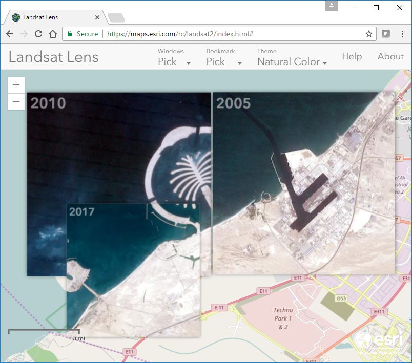

Welcome to Landsat Lens, a touch and mouse friendly application for browsing past and present Landsat satellite imagery hosted by Esri.
Using a mouse, a lens can be moved around the map with a standard left mouse click and drag operation. Scrolling the mouse wheel will enlarge or decrease the size of a lens depending on the direction.
With a touch device like an iPad, a lens can moved with an intuitive press and drag. To resize, pinch or expand two or more fingers within a lens. Likewise, rotating a lens is achieved by twisting two or more fingers. Unlike with a mouse, touch screens allow the user to manipulate two or more lenses concurrently.
By default, the app starts with a natural color lens dated 2017 located close to the Palm Jebel Ali in Dubai. To pick a preset location choose from one of the entries from the Bookmarks dropdown menu. Alternative you can pan or zoom to any area of interest.
For one of the preset locations, or your own area of interest, you may want to view changes over time. To do so, use the Windows dropdown menu to add a window showing 2000, 2005, 2010 or 2015 imagery. By swiping lenses over the basemap and one another you can easily see changes in vegetation, coastlines, rivers and human actiity. Use the last option in the dropdown menu to removal all lenses from the map.
The user can pick from one of five themes. Each theme uses a different band combination and color scale to accentuate various phenomena. Namely:
- Agriculure
This band combination (6,5,2) is good for agricultural studies. In this band combination, vigorous vegetation appears bright green, healthy vegetation appears as a darker green, while stressed vegetation appears dull green. Coniferous forests appear as a dark, rich green while deciduous forests appear as a bright green. Sparsely vegetated and bare areas appear brown and mauve.
- Color Infrared
This band combination (5,4,3) gives results similar to traditional false color infrared photography. This band combination gives results similar to traditional false color infrared photography, which adds a near infrared (NIR) band and drops the visible blue band. Vegetation in the NIR band is highly reflective due to chlorophyll, and a NIR composite vividly shows vegetation in various shades of red. Urban areas are cyan blue, and soils vary from dark to light browns. Ice, snow, and clouds are white or light cyan. Coniferous trees will appear darker red than hardwoods. Generally, deep red hues indicate broad leaf and/or healthier vegetation while lighter reds signify grasslands or sparsely vegetated areas. Water appears very dark, due to the absorption of energy in the visible red and near IR bands.
- Natural Color
This band combination (4,3,2) approximates the spectral range of vision of the human eye, and has been pansharpened using the 15m panchromatic band. Here the 30m natural color imagery has been pansharpened using the 15m panchromatic band in order to achieve better imagery resolution. This Landsat band combination is well suited for broad-based analysis of both terrestrial and underwater features, and for urban studies. This true-color composite approximates the range of vision for the human eye, and hence these images appear to be close to what we would expect to see in a normal photograph. Natural color images tend to have low contrast and are somewhat hazy in appearance. This is because blue light is more susceptible than other bandwidths to scattering by the atmosphere, however, it penetrates clear water deeper than the other bands, and is well suited to analysis of underwater features, Healthy vegetation is green, recently cleared fields are very light, unhealthy vegetation is brown and yellow, roads are gray, and shorelines are white.
- Moisure Index
The Normalized Difference Moisture Index estimates levels of moisture in vegetation. Wetlands and other vegetated areas with high levels of moisture appear as blue whereas deserts appear as tan to brown.
- Vegetation Index
Vegetation Index is used to measure and monitor the vigor of vegetation on Earth, such as plant growth, vegetation cover, and biomass production. Vegetation Index is a compilation of visible and near infrared regions of the electromagnetic spectrum. The image service is colorized with a color ramp that ranges from brown to green. Very low values of NDVI (0.1 and below, which is displayed as light brown) correspond to barren areas of rock, sand, or snow. Moderate values (0.2 to 0.3, displayed as light green) represent shrub and grassland, while high values (0.6 to 0.9, displayed as dark green) indicate temperate and tropical rainforest.
To display this dialog again click the help button in the upper right hand corner of the application. The About dialog details the technology used to build this application and links to learn more about the imagery.
Please visit our blog or web portal for more information on this and other applications.